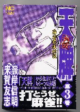

厳正な審査の結果、本年度のコミック大賞は、全審査員（約１名）の圧倒的な支持を得て、月刊近代麻雀連載、オバカミーコ 作・片山まさゆきに決定した。

舞台は麻雀プロ界。プロ界と深い交流を持っている作者ならではのドキュメントタッチ。某bbsにスレが立つほどの話題性とともに、図解戦術書もどきのコマもあって楽しめる。
「先手・良形・高得点、このうち二つがあれば押し。後手・悪形・低得点、このうち二つがあれば引き」なんてのもおもしろかった。もっとも実戦では、そんなこと考える前に切っているけど。(^-^；
いずれにしても、話はこれからが佳境のようなので、来年も大いに楽しみ。
例年はコミック大賞１作品を選定して終わり。しかし今年は中日ドラゴンズが優勝した。そのドラゴンズでは、今年は山本マサ投手の複数年契約をはじめ、暖冬更改だとか。
＃それにしても川井昌弘選手の２千万円アップはよくやった。「１千万円がプレーに対して。１千万円が存在感に対して」とは、中日もにくいことを。
ということで、今年は優秀賞も選定。その優秀賞は同じく月刊近代連載のMr.ブラフマン（原作・浜田正則/絵・張慶二郎）。
これは理屈抜きにおもしろい漫画。決して作者が自分と同県人だとか、主人公の姉ちゃんがグラマーだとか、そんな個人的なことが理由で優秀賞に選定したわけではない。(^-^)
今年はもう一つ特別賞が。それは週刊漫画ゴラク連載の天牌外伝第７話「麻雀道」（原作・来賀友志/絵・嶺岸信明）。

片山まさゆき同様、やはり原作者がプロ界に詳しいだけあって、プロ界に対する風刺が効いた好感の持てる作品。いま話題のリャンメンカンだかカンリャンメンとかの複合ターツの１型についても、すでに先取りしている。それにしてもこの若手プロ、好かん顔をしているな....
というわけで、昨年と違って今年は大豊作の年。
PS：「哲也」、ふう、やっと終わったか.....
|